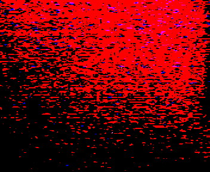

PsiPog.net
Evan's First Flare
Evan has a talent of flaring his constructs. This was his first shot at getting it on camera. Please be aware that this image has been enhanced using Paint Shop Pro by tweaking the gamma, brightness, and contrast. Unfortunately, we lost the original unenhanced image. We have the original of his future flared constructs though, so you can tweak the enhancements yourself.

All Content, Images, Video, Text, and Software is © Copyright 2000-2006 PsiPog.net and their respective authors. All Rights Reserved.
You must agree to the Terms of Service and Privacy Policy to view this website. Click here to contact the webmaster.